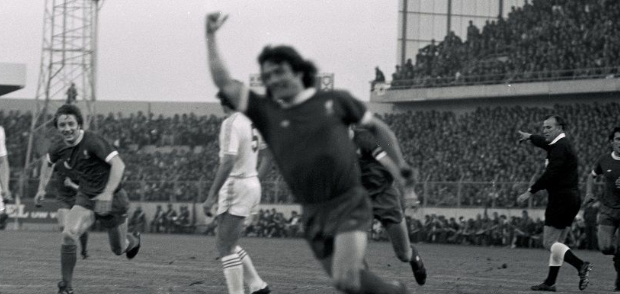
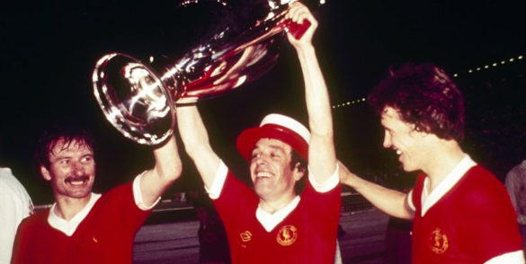
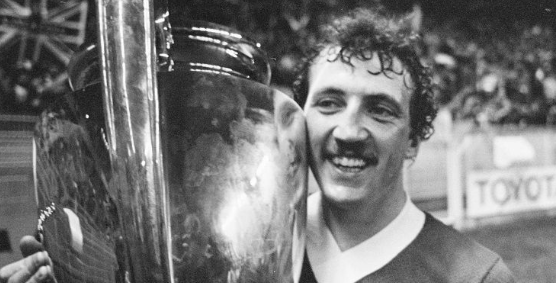
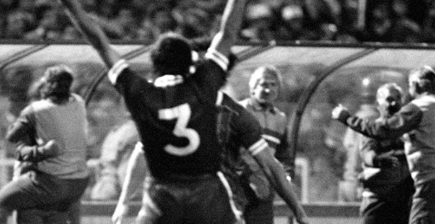
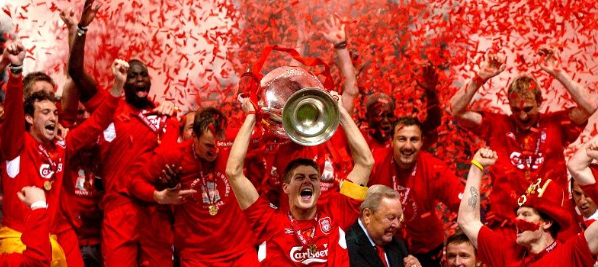
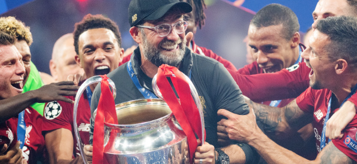

첫번 째 UEFA 컵 우승 1976-1977
5월 9일 FC 브뤼헤를 상대로 4-3 승리를 거두어 첫번 째 UEFA 컵 우승을 차지.
.

두번 째 UEFA 컵 우승 1977-1978
5월 25일 뮌헨글라트바흐를 상대로 3-1 승리를 거두며 두번 째 UEFA 컵 우승을 차지.
.

세번 째 UEFA 컵 우승 1980-1981
5월 27일 레알마드리드를 상대로 1-0 승리를 거두어 세번 째 UEFA 컵 우승을 차지함.
.

네번 째 UEFA 컵 우승 1983-1984
5월 30일 AS로마를 상대로 승부차기 승리를 거두어 네번 째 UEFA 컵 우승을 차지함.
.

다섯번 째 UEFA 컵 우승 2004-2005
5월 25일 AS밀란을 상대로 승부차기 승리를 거두어 다섯번 째 UEFA 컵 우승을 차지함.
.

여섯번 째 UEFA 컵 우승 20018-2019
6월 1일 토트넘을 상대로 2-0 승리를 거두어 여섯번 째 UEFA 컵 우승을 차지함.
.